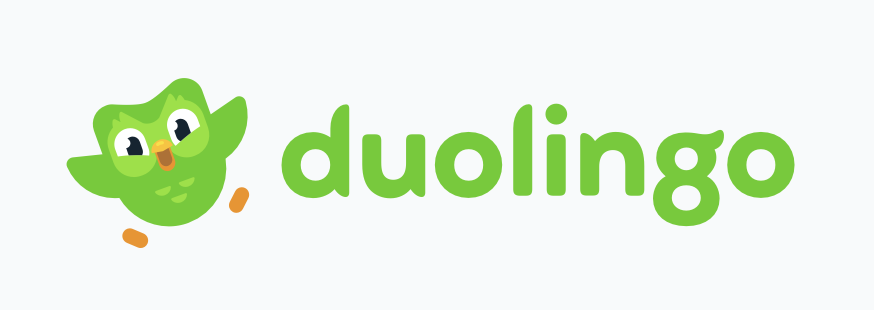
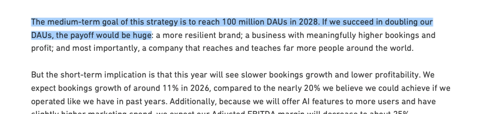
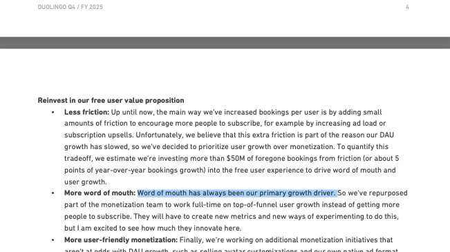
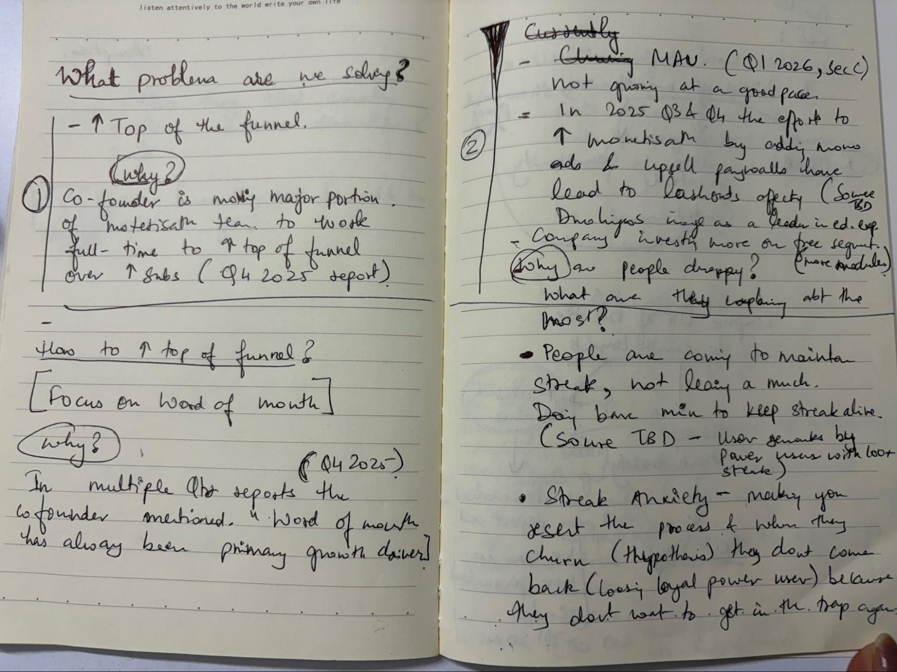
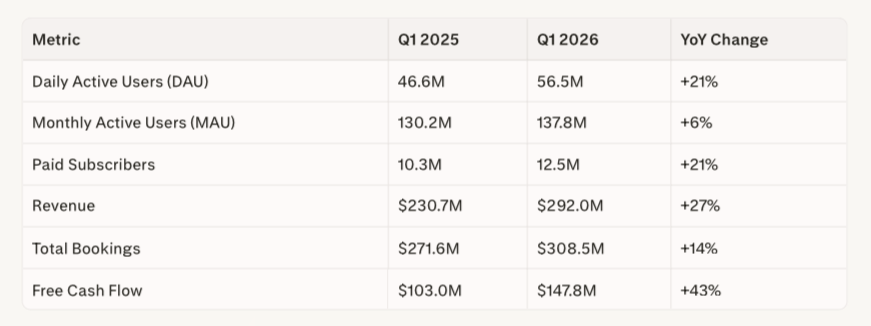
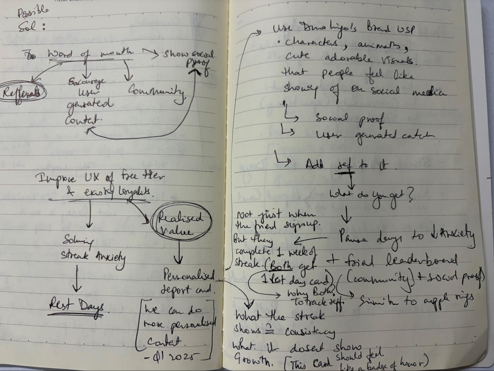
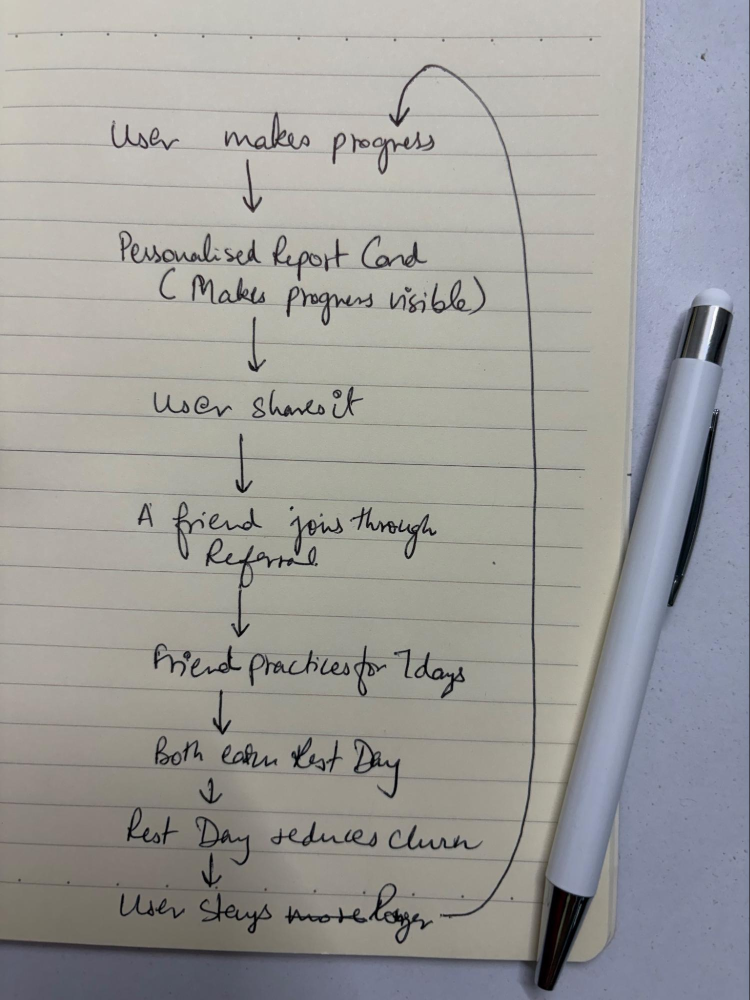

Three small product bets. One compounding growth loop.
Duolingo has made a clear strategic shift: prioritize user growth and the free user experience, even at the cost of some short-term monetization. Luis von Ahn said the company is investing in free UX to drive word of mouth and user growth, and he positioned that as core to reaching 100M DAUs by 2028.

This creates an opening. Duolingo still lacks a persistent, product-led sharing engine and a word-of-mouth mechanic with meaningful stakes. At the same time, some of its most loyal learners quietly churn after breaking long streaks during real-life disruptions, even when their motivation to learn has not disappeared.
This matters because the next stage of growth cannot depend only on more paid acquisition or more paywall tuning. It needs lightweight, in-product loops that improve the free experience, make progress visible, and naturally encourage sharing. That is exactly where these three features fit.
This context sets two strategic directions from leadership:
This PRD focuses on these two directions and designs a cohesive system that solves both simultaneously.
This matters now because Duolingo itself has changed the framing. In public statements tied to its 2026 results, Luis von Ahn said the company is still early in executing its 2026 plan and is building a product that drives “long-term engagement and loyalty.”
That is an important signal. It means the company is no longer just asking, “How do we monetize better?”
It is asking, “How do we make the free experience strong enough that users stay longer, share more, and bring others in?” That shift also aligns with von Ahn’s repeated point that word of mouth has historically been the main growth driver for Duolingo.


So the opportunity is not to invent a new growth story from scratch. It is to strengthen the one Duolingo already believes in, using product mechanics that are lightweight, social, and rooted in genuine learner value.
What we think is the problem: Duolingo’s historical growth has been driven by organic word-of-mouth. However, there is no structured, incentive-aligned system that turns satisfied learners into active promoters who refer friends and create shareable content.
Signals that validate this problem:
“Organic growth is what has worked all these years for us” -- the company will continue to prioritize organic word-of-mouth over paid subscription pushes.
FounderThe founder indicated they will spend more marketing efforts on increasing top-of-funnel instead of solely focusing on subscription conversion.
Earnings CallOther consumer apps (Strava, Spotify, MyFitnessPal) have built shareable progress artifacts that drive massive organic sharing and referrals. Users already share streaks and achievements informally on social media, but there is no official, personalized, high-value artifact that makes them feel proud to share.
CompetitiveWhy this is a big problem: Without a systematic WOM engine, Duolingo is leaving organic growth on the table. Paid acquisition is expensive and less sustainable. New users from friends are higher quality -- more likely to stay, more engaged. If WOM is not intentionally designed, Duolingo will rely on accidental virality rather than a predictable growth lever.
HMW turn Duolingo’s loyal learners into active promoters who naturally refer friends and create shareable content, thereby increasing top-of-funnel growth through organic word-of-mouth?
What we think is the problem: Many current users, especially power users with long streaks (200+ days), are churning because they feel they are not learning anything tangible -- just maintaining a streak. The streak mechanic creates anxiety and guilt, leading to resentment and eventual abandonment. Once they leave, they are unlikely to return because rejoining means re-entering a high-pressure streak system they found exhausting.
Signals that validate this problem:
Duolingo is adding more models and more/different sentences to improve the learning experience for current users, especially free users. Recent updates focus on personalized content and better sentence variety, implying a strategic bet on improving realized learning value.
2026 Q1 LetterA significant drop in MAU while DAU is more stable suggests occasional users are churning, likely due to lack of perceived value.
Product Signal
Community feedback:
“I had a 200+ day streak but left because it started giving me anxiety and guilt.”
Reddit“I come just to maintain my streak, not because I feel I’m learning.”
Reddit“The streak feels like a trap; I can’t break it without feeling like a failure.”
RedditPsychological pattern: Streak anxiety → resentment → churn → low likelihood of return.
Why this is a big problem: Power users are the most valuable segment -- high engagement, high brand love, high WOM potential. If they leave feeling resentful, Duolingo loses both retention and advocacy.
HMW help long-term power users feel that they are genuinely progressing and becoming better learners, so they engage more meaningfully and don’t churn out of resentment?
There are two visible product problems, but they are connected by one deeper truth: Duolingo is excellent at creating habits, but weaker at helping users make meaning out of those habits.
The first problem is that word of mouth exists, but mostly as an external byproduct. Users may enjoy the product, but the product itself does not consistently generate high-quality, identity-rich, shareable moments that travel outside the app and pull new users back in.
The second problem is that streaks drive commitment, but they also create fragility. For long-term users, the streak becomes more than a metric; it becomes identity. When it breaks during a hard week, the emotional crash can be disproportionate, and Duolingo loses exactly the kinds of users it should be protecting most carefully.
That leads to the product question behind this PRD: How might Duolingo reduce streak anxiety without weakening streaks, while also turning real progress into a recurring growth engine?
The right answer is not one isolated feature. It is a sequence of solutions that each solve a real learner problem and also strengthen the next one. The story starts with helping users see their progress, then helping them protect it, and finally helping them share it in a way that drives new activation.

That is why the first solution should not be introduced as “a feature.” It should be introduced as the missing layer in Duolingo’s current experience: a way to translate invisible effort into visible achievement. Once that exists, the rest of the system becomes easier to justify and easier for users to understand.
Solution 1
A Personalized Monthly Report Card is a monthly recap that shows learners what they actually achieved over the last month. It takes behavior that currently feels repetitive or invisible and reframes it as a story of growth.
Instead of making the learner ask, “Did I just maintain a streak?” the product answers with something more meaningful: what improved, what was unlocked, what they are getting better at, and what kind of learner they are becoming. The Report Card can include: journey markers such as units completed or progress made, 2–3 strength signals, one supportive growth area for next month, a visual streak calendar, and a shareable personality tag.
Not a vanity recap with random metrics. Not a once-a-year moment. Not a generic AI summary. A monthly artifact creates a recurring habit of reflection and sharing -- far more useful for product-led growth.
Creates a native reason to share. Users don’t naturally share internal metrics unless those metrics reflect identity, progress, or status. The Report Card makes progress legible enough to become identity.
Once progress becomes visible, another truth emerges: progress is fragile. A learner who has clearly built momentum now feels more sharply what is at stake when life interrupts that momentum. This leads directly to Rest Days.
The Report Card is the top-of-funnel share moment. Every shared card becomes a distribution point carrying a referral CTA like “Start Your Own Story.” It also creates the emotional context for Rest Days.
Solution 2
The Referral Loop reframes invitation from a low-value share action into a meaningful, milestone-based social contract. One user invites another; the invited user completes a 7-day streak; both earn a Rest Day.
The sequence:
Not a generic install referral program. The reward is not triggered by a download alone -- install quality matters more than raw volume. The milestone is activation, not acquisition theater.
Gives users a reason to invite friends that is directly tied to something they care about. Makes word of mouth operational and measurable end to end: share, install, first lesson, day 7, reward.
A focused onboarding experience: “Your friend invited you. Complete your first 7-day streak and you’ll both earn a Rest Day 🌿.” Includes a first-week streak tracker and clear reward confirmation.
When User B hits Day 7, User A receives a clear, emotionally satisfying notification: “You earned 1 Rest Day.” This closes the loop and creates the perfect moment for the next social action.
Solution 3
A Rest Day is a one-time, earned streak shield for real-life interruptions. It allows a user to preserve a streak without doing a lesson on a genuinely difficult day -- but only when they consciously choose to use it.
It is designed for illness, travel, emergencies, and overloaded days. The user keeps the streak alive, earns no XP, and sees the day marked differently in the calendar with a subtle leaf symbol. Users earn Rest Days through milestone streak achievements and successful referrals when the invited user completes a 7-day streak.
Not a skip-the-work reward. Not infinite, not passive, not automatically triggered. The cap stays hard at three, and the user must decide when to spend one. Not a monetization shortcut in this phase.
Rest Days solve the specific retention problem that streaks create at high intensity. When a learner with a long streak faces a bad day, the product currently offers a cliff. Rest Days replace that cliff with a bridge.
Once Rest Days exist, they immediately raise another product question: how should users earn them in a way that feels fair, motivating, and growth-positive? That leads directly to the referral loop.
Rest Days are the reward that makes referrals emotionally compelling. XP is abundant and forgettable. A Rest Day protects something the learner truly values -- a far stronger social incentive. They also enrich the Report Card narrative.
Each solution solves a real problem and strengthens the next. Together, they form a closed loop.
| Problem | Sub-Problem | Solution | How It Solves |
|---|---|---|---|
| TOF growth not leveraging WOM systematically | Lack of structured WOM engine | Report Cards + Referrals | Shareable progress artifacts and rest-day incentives turn users into promoters. |
| No incentive for referrals or UGC | Share actions feel low-value | Rest Days + Friend Leaderboards | Earn rest days for referrals; friend leaderboards create community and motivation. |
| Users churn due to lack of realized value | Don’t feel they’re learning | Personalized Report Cards | Show concrete progress (levels, skills), reinforcing learning value. |
| Users churn due to streak anxiety | Streak = guilt / anxiety, not motivator | Rest Days | Allow streak-free days in emergencies; reduce guilt and prevent resentment-driven churn. |
User completes a month of learning.
Duolingo generates a personalized monthly report card: shows progress, levels gained, strengths, and areas to improve.
User is prompted to share the report card. If they refer a friend via the share link, the referral loop activates.
Friend signs up and completes a 7-day streak. User earns 1 Rest Day. User and friend are added to a friend leaderboard.
Daily notifications about friend’s progress. Friendly competition motivates consistency.
If the user faces an emergency (travel, illness): they redeem a rest day. Streak remains intact. Anxiety and guilt are reduced.
Over time: users feel realized learning value via report cards, feel less trapped by streaks via rest days, and refer more friends via incentives. TOF grows via organic WOM. DAU/MAU improves via better retention.

This is a closed-loop system: each part reinforces the others.
It mirrors the learner journey: first meaning, then protection, then growth.
The rollout should follow the same narrative logic as the product. The sequence matters -- each phase earns the next.
Establishes visible progress and monthly sharing behavior. Creates the identity layer the rest of the system depends on. Ships first because without this, there is nothing worth sharing and no context for rest days.
Protects motivation and gives the system a meaningful reward layer. Provides the scarce, high-value incentive that makes referrals worth making. Ships second because it needs the Report Card to establish context.
Converts sharing and reward into measurable growth. Now that the shareable artifact exists and the reward is meaningful, the referral mechanic has real weight. Ships third so it can leverage the first two solutions.
Validates full-loop performance from share to activation to retention. Identifies which cohorts and behaviors generate the strongest downstream impact. Defines Phase 2 scope.
| Risk | Likelihood | Mitigation |
|---|---|---|
| Users might game the system (e.g., fake accounts to earn rest days) | Medium | Require verified activity (7-day streak) before reward triggers. Flag anomalous patterns in analytics. |
| Rest days might dilute streak value if not carefully communicated | Medium | Frame rest days as earned, scarce, and identity-consistent -- “you kept going through a hard moment.” |
| Some users might still find leaderboards stressful | Low | Make leaderboard opt-in. Allow users to hide rankings or mute notifications. |
| If report cards are not visually compelling, sharing rates will be low | High | User-test at least 3 visual formats before launch. Set a share rate threshold as a launch gate. |
Success should be measured not just by adoption of individual features, but by whether the system changes behavior across retention and acquisition. Duolingo’s own framing around long-term engagement makes that the right lens.
| Solution | Primary Signal | What to Watch |
|---|---|---|
| Report Card | Monthly share rate and share-to-install conversion | Shares without downstream activation become vanity. |
| Rest Days | Retention after near-streak-break moments | Hoarding may signal unresolved anxiety. |
| Referral Loop | Referral-to-7-day-streak conversion | Fraud or low-quality installs need abuse checks. |
The strongest part of this direction is that it does not ask users to do something unnatural. It takes behaviors already present in Duolingo -- learning daily, caring about streaks, sharing proud moments with friends -- and gives them better product scaffolding.
That is why this feels less like adding features and more like finishing a story the product has already started.
The three solutions work because they are sequenced around the learner’s emotional arc: first, help them see their progress. Then help them protect it. Then help them share it. That sequence is the product logic. The features are just the execution.